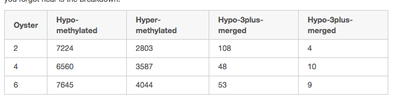
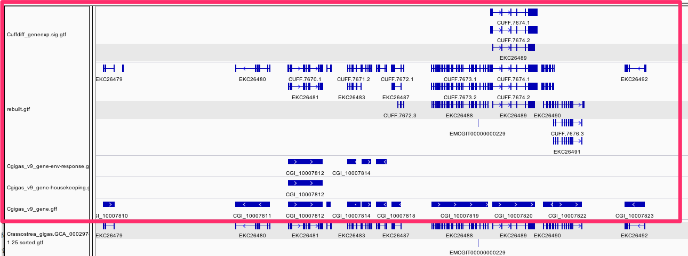
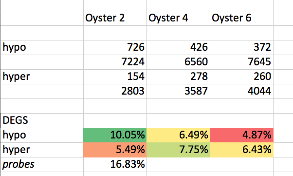
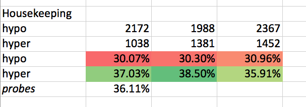
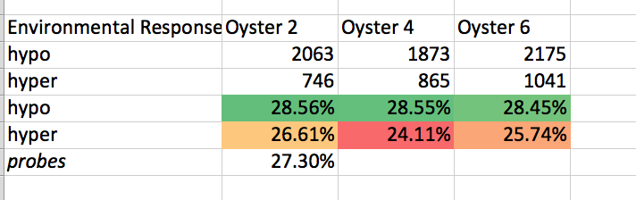
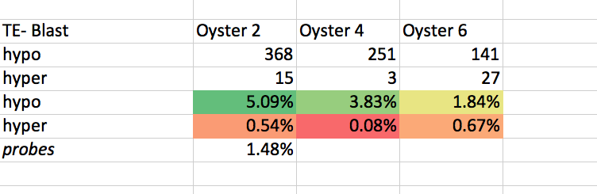
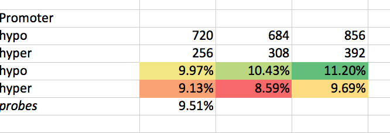
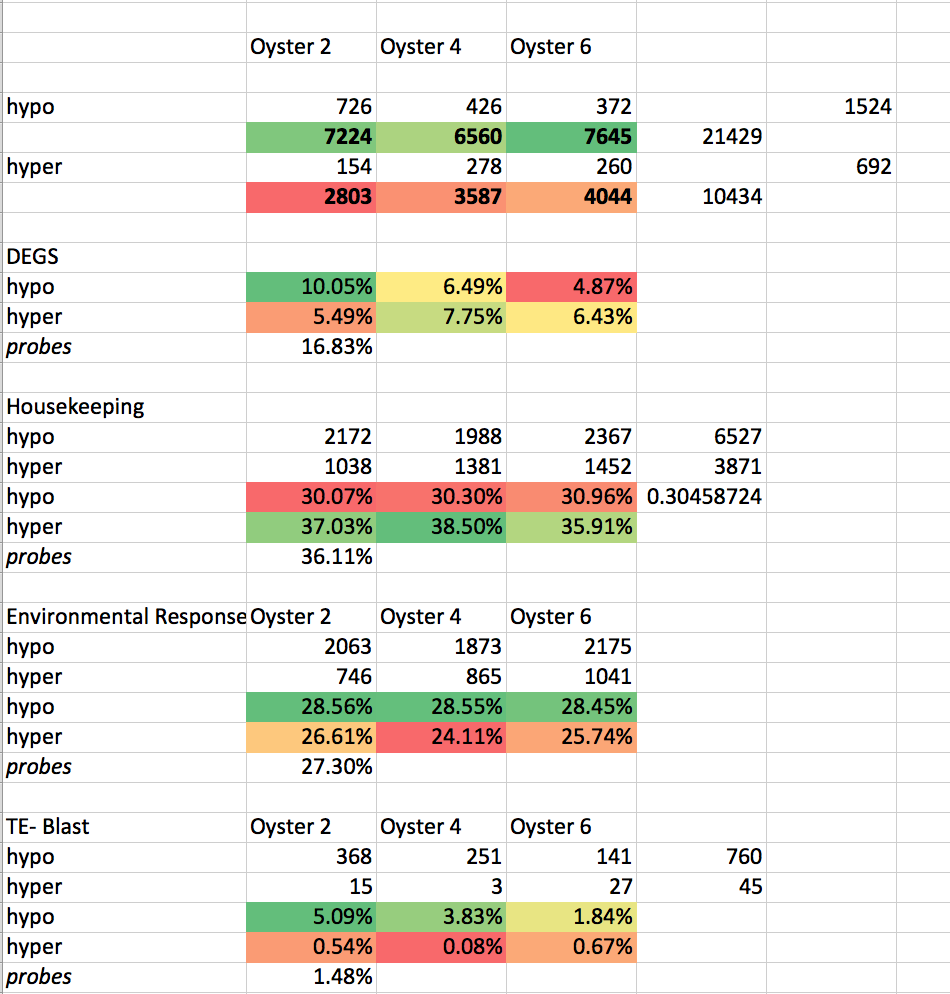

Based on notebook 04 - but separating out to see if there is difference between hypo and hyper methylated.Based on notebook 04 - but separating out to see if there is difference between hypo and hyper methylated.
<img src="http://eagle.fish.washington.edu/cnidarian/skitch/half-shell___Lab_notebook_of_Steven_Roberts_1ACECD10.png" alt="half-shell___Lab_notebook_of_Steven_Roberts_1ACECD10.png"/>
!date%pylab inlineimport scipy.stats as statsFeature (from nb -03) **tldr** 4 "new" tracks<img src="http://eagle.fish.washington.edu/cnidarian/skitch/IGV_and_Directory_Listing_of__halfshell_2015-02-hs-bedgraph__1AA51F1B.png" width =100% alt="IGV_and_Directory_Listing_of__halfshell_2015-02-hs-bedgraph__1AA51F1B.png"/>```/Users/sr320/data-genomic/tentacle/Cuffdiff_geneexp.sig.gtf/Users/sr320/data-genomic/tentacle/rebuilt.gtf/Users/sr320/data-genomic/tentacle/Cgigas_v9_gene-housekeeping.gff/Users/sr320/data-genomic/tentacle/Cgigas_v9_gene-env-response.gff```Feature (from nb -03)
tldr 4 "new" tracks 
/Users/sr320/data-genomic/tentacle/Cuffdiff_geneexp.sig.gtf
/Users/sr320/data-genomic/tentacle/rebuilt.gtf
/Users/sr320/data-genomic/tentacle/Cgigas_v9_gene-housekeeping.gff
/Users/sr320/data-genomic/tentacle/Cgigas_v9_gene-env-response.gff
`-wb Write the original entry in B for each overlap. Useful for knowing what A overlaps. Restricted by -f and -r.`-wb Write the original entry in B for each overlap. Useful for knowing what A overlaps. Restricted by -f and -r.
xxxxxxxxxxtldr<img src="http://eagle.fish.washington.edu/cnidarian/skitch/Screenshot_4_3_15__7_22_AM_1ACED994.png" alt="Screenshot_4_3_15__7_22_AM_1ACED994.png"/>tldr

x
!head ./data/2014.07.02.colson/genomeBrowserTracks/logFC_HS-preHS/2014.07.02.2M_sig.bedGraphx
!fgrep -c "-" ./data/2014.07.02.colson/genomeBrowserTracks/logFC_HS-preHS/2014.07.02.2M_sig.bedGraphx
!fgrep "-" ./data/2014.07.02.colson/genomeBrowserTracks/logFC_HS-preHS/2014.07.02.2M_sig.bedGraph | headx
!fgrep "-" \./data/2014.07.02.colson/genomeBrowserTracks/logFC_HS-preHS/2014.07.02.2M_sig.bedGraph \> /Users/sr320/data-genomic/tentacle/2014.07.02.2M_sig.hypo.bedGraph!head /Users/sr320/data-genomic/tentacle/2014.07.02.2M_sig.hypo.bedGraph!fgrep "-" \./data/2014.07.02.colson/genomeBrowserTracks/logFC_HS-preHS/2014.07.02.4M_sig.bedGraph \> /Users/sr320/data-genomic/tentacle/2014.07.02.4M_sig.hypo.bedGraph!head /Users/sr320/data-genomic/tentacle/2014.07.02.4M_sig.hypo.bedGraph!fgrep "-" \./data/2014.07.02.colson/genomeBrowserTracks/logFC_HS-preHS/2014.07.02.6M_sig.bedGraph \> /Users/sr320/data-genomic/tentacle/2014.07.02.6M_sig.hypo.bedGraph!head /Users/sr320/data-genomic/tentacle/2014.07.02.6M_sig.hypo.bedGraphx
!intersectbed \-wb \-a /Users/sr320/data-genomic/tentacle/2014.07.02.2M_sig.hypo.bedGraph \-b /Users/sr320/data-genomic/tentacle/Cuffdiff_geneexp.sig.gtf \| cut -f 6 \| sort | uniq -c x
!intersectbed \-wb \-a /Users/sr320/data-genomic/tentacle/2014.07.02.4M_sig.hypo.bedGraph \-b /Users/sr320/data-genomic/tentacle/Cuffdiff_geneexp.sig.gtf \| cut -f 6 \| sort | uniq -c x
!intersectbed \-wb \-a /Users/sr320/data-genomic/tentacle/2014.07.02.6M_sig.hypo.bedGraph \-b /Users/sr320/data-genomic/tentacle/Cuffdiff_geneexp.sig.gtf \| cut -f 6 \| sort | uniq -c x
!intersectbed \-wb \-a /Users/sr320/git-repos/paper-Temp-stress/ipynb/data/array-design/OID40453_probe_locations.gff \-b /Users/sr320/data-genomic/tentacle/Cuffdiff_geneexp.sig.gtf \| cut -f 11 \| sort | uniq -c x
# Enter the data comparing Oyster 2 then Probesobs = array([[726, 7224], [117460, 697753]])# Calculate the chi-square testchi2_corrected = stats.chi2_contingency(obs, correction=True)chi2_uncorrected = stats.chi2_contingency(obs, correction=False)# Print the resultprint('CHI SQUARE')print('The corrected chi2 value is {0:5.3f}, with p={1:5.3f}'.format(chi2_corrected[0], chi2_corrected[1]))print('The uncorrected chi2 value is {0:5.3f}, with p={1:5.3f}'.format(chi2_uncorrected[0], chi2_uncorrected[1]))x
# Enter the data comparing Oyster 4 then Probesobs = array([[426, 6560], [117460, 697753]])# Calculate the chi-square testchi2_corrected = stats.chi2_contingency(obs, correction=True)chi2_uncorrected = stats.chi2_contingency(obs, correction=False)# Print the resultprint('CHI SQUARE')print('The corrected chi2 value is {0:5.3f}, with p={1:5.3f}'.format(chi2_corrected[0], chi2_corrected[1]))print('The uncorrected chi2 value is {0:5.3f}, with p={1:5.3f}'.format(chi2_uncorrected[0], chi2_uncorrected[1]))x
# Enter the data comparing Oyster 6 then Probesobs = array([[372, 7645], [117460, 697753]])# Calculate the chi-square testchi2_corrected = stats.chi2_contingency(obs, correction=True)chi2_uncorrected = stats.chi2_contingency(obs, correction=False)# Print the resultprint('CHI SQUARE')print('The corrected chi2 value is {0:5.3f}, with p={1:5.3f}'.format(chi2_corrected[0], chi2_corrected[1]))print('The uncorrected chi2 value is {0:5.3f}, with p={1:5.3f}'.format(chi2_uncorrected[0], chi2_uncorrected[1]))x
!fgrep -v "-" \./data/2014.07.02.colson/genomeBrowserTracks/logFC_HS-preHS/2014.07.02.2M_sig.bedGraph \> /Users/sr320/data-genomic/tentacle/2014.07.02.2M_sig.hyper.bedGraph!head /Users/sr320/data-genomic/tentacle/2014.07.02.2M_sig.hyper.bedGraph!wc -l /Users/sr320/data-genomic/tentacle/2014.07.02.2M_sig.hyper.bedGraph!fgrep -v "-" \./data/2014.07.02.colson/genomeBrowserTracks/logFC_HS-preHS/2014.07.02.4M_sig.bedGraph \> /Users/sr320/data-genomic/tentacle/2014.07.02.4M_sig.hyper.bedGraph!head /Users/sr320/data-genomic/tentacle/2014.07.02.4M_sig.hyper.bedGraph!wc -l /Users/sr320/data-genomic/tentacle/2014.07.02.4M_sig.hyper.bedGraph!fgrep -v "-" \./data/2014.07.02.colson/genomeBrowserTracks/logFC_HS-preHS/2014.07.02.6M_sig.bedGraph \> /Users/sr320/data-genomic/tentacle/2014.07.02.6M_sig.hyper.bedGraph!head /Users/sr320/data-genomic/tentacle/2014.07.02.6M_sig.hyper.bedGraph!wc -l /Users/sr320/data-genomic/tentacle/2014.07.02.6M_sig.hyper.bedGraphx
!intersectbed \-wb \-a /Users/sr320/data-genomic/tentacle/2014.07.02.2M_sig.hyper.bedGraph \-b /Users/sr320/data-genomic/tentacle/Cuffdiff_geneexp.sig.gtf \| cut -f 6 \| sort | uniq -c !intersectbed \-wb \-a /Users/sr320/data-genomic/tentacle/2014.07.02.4M_sig.hyper.bedGraph \-b /Users/sr320/data-genomic/tentacle/Cuffdiff_geneexp.sig.gtf \| cut -f 6 \| sort | uniq -c !intersectbed \-wb \-a /Users/sr320/data-genomic/tentacle/2014.07.02.6M_sig.hyper.bedGraph \-b /Users/sr320/data-genomic/tentacle/Cuffdiff_geneexp.sig.gtf \| cut -f 6 \| sort | uniq -c !intersectbed \-wb \-a /Users/sr320/git-repos/paper-Temp-stress/ipynb/data/array-design/OID40453_probe_locations.gff \-b /Users/sr320/data-genomic/tentacle/Cuffdiff_geneexp.sig.gtf \| cut -f 11 \| sort | uniq -c x
# Enter the data comparing Oyster 2 then Probesobs = array([[154, 2803], [117460, 697753]])# Calculate the chi-square testchi2_corrected = stats.chi2_contingency(obs, correction=True)chi2_uncorrected = stats.chi2_contingency(obs, correction=False)# Print the resultprint('CHI SQUARE')print('The corrected chi2 value is {0:5.3f}, with p={1:5.3f}'.format(chi2_corrected[0], chi2_corrected[1]))print('The uncorrected chi2 value is {0:5.3f}, with p={1:5.3f}'.format(chi2_uncorrected[0], chi2_uncorrected[1]))x
# Enter the data comparing Oyster 2 then Probesobs = array([[278, 3587], [117460, 697753]])# Calculate the chi-square testchi2_corrected = stats.chi2_contingency(obs, correction=True)chi2_uncorrected = stats.chi2_contingency(obs, correction=False)# Print the resultprint('CHI SQUARE')print('The corrected chi2 value is {0:5.3f}, with p={1:5.3f}'.format(chi2_corrected[0], chi2_corrected[1]))print('The uncorrected chi2 value is {0:5.3f}, with p={1:5.3f}'.format(chi2_uncorrected[0], chi2_uncorrected[1]))x
# Enter the data comparing Oyster 2 then Probesobs = array([[260, 4044], [117460, 697753]])# Calculate the chi-square testchi2_corrected = stats.chi2_contingency(obs, correction=True)chi2_uncorrected = stats.chi2_contingency(obs, correction=False)# Print the resultprint('CHI SQUARE')print('The corrected chi2 value is {0:5.3f}, with p={1:5.3f}'.format(chi2_corrected[0], chi2_corrected[1]))print('The uncorrected chi2 value is {0:5.3f}, with p={1:5.3f}'.format(chi2_uncorrected[0], chi2_uncorrected[1]))!intersectbed \-wb \-a ./data/2014.07.02.colson/genomeBrowserTracks/logFC_HS-preHS/2014.07.02.2M_sig.bedGraph \-b /Users/sr320/data-genomic/tentacle/rebuilt.gtf \| cut -f 6 \| sort | uniq -c !intersectbed \-wb \-a ./data/2014.07.02.colson/genomeBrowserTracks/logFC_HS-preHS/2014.07.02.4M_sig.bedGraph \-b /Users/sr320/data-genomic/tentacle/rebuilt.gtf \| cut -f 6 \| sort | uniq -c !intersectbed \-wb \-a ./data/2014.07.02.colson/genomeBrowserTracks/logFC_HS-preHS/2014.07.02.6M_sig.bedGraph \-b /Users/sr320/data-genomic/tentacle/rebuilt.gtf \| cut -f 6 \| sort | uniq -c !intersectbed \-wb \-a /Users/sr320/git-repos/paper-Temp-stress/ipynb/data/array-design/OID40453_probe_locations.gff \-b /Users/sr320/data-genomic/tentacle/rebuilt.gtf \| cut -f 11 \| sort | uniq -c x
# Enter the data comparing Oyster 2 then Probesobs = array([[8768, 10028], [1197818, 697753]])# Calculate the chi-square testchi2_corrected = stats.chi2_contingency(obs, correction=True)chi2_uncorrected = stats.chi2_contingency(obs, correction=False)# Print the resultprint('CHI SQUARE')print('The corrected chi2 value is {0:5.3f}, with p={1:5.3f}'.format(chi2_corrected[0], chi2_corrected[1]))print('The uncorrected chi2 value is {0:5.3f}, with p={1:5.3f}'.format(chi2_uncorrected[0], chi2_uncorrected[1]))# Enter the data comparing Oyster 4 then Probesobs = array([[7694, 10148], [1197818, 697753]])# Calculate the chi-square testchi2_corrected = stats.chi2_contingency(obs, correction=True)chi2_uncorrected = stats.chi2_contingency(obs, correction=False)# Print the resultprint('CHI SQUARE')print('The corrected chi2 value is {0:5.3f}, with p={1:5.3f}'.format(chi2_corrected[0], chi2_corrected[1]))print('The uncorrected chi2 value is {0:5.3f}, with p={1:5.3f}'.format(chi2_uncorrected[0], chi2_uncorrected[1]))# Enter the data comparing Oyster 6 then Probesobs = array([[6160, 11690], [1197818, 697753]])# Calculate the chi-square testchi2_corrected = stats.chi2_contingency(obs, correction=True)chi2_uncorrected = stats.chi2_contingency(obs, correction=False)# Print the resultprint('CHI SQUARE')print('The corrected chi2 value is {0:5.3f}, with p={1:5.3f}'.format(chi2_corrected[0], chi2_corrected[1]))print('The uncorrected chi2 value is {0:5.3f}, with p={1:5.3f}'.format(chi2_uncorrected[0], chi2_uncorrected[1]))Separating out hypo and hyperSeparating out hypo and hyper
<img src="http://eagle.fish.washington.edu/cnidarian/skitch/Screenshot_4_3_15__7_23_AM_1ACED9DD.png" alt="Screenshot_4_3_15__7_23_AM_1ACED9DD.png"/>
x
!intersectbed \-wb \-a /Users/sr320/data-genomic/tentacle/2014.07.02.2M_sig.hypo.bedGraph \-b /Users/sr320/data-genomic/tentacle/Cgigas_v9_gene-housekeeping.gff \| cut -f 6 \| sort | uniq -c !intersectbed \-wb \-a /Users/sr320/data-genomic/tentacle/2014.07.02.2M_sig.hyper.bedGraph \-b /Users/sr320/data-genomic/tentacle/Cgigas_v9_gene-housekeeping.gff \| cut -f 6 \| sort | uniq -c x
!intersectbed \-wb \-a /Users/sr320/data-genomic/tentacle/2014.07.02.4M_sig.hypo.bedGraph \-b /Users/sr320/data-genomic/tentacle/Cgigas_v9_gene-housekeeping.gff \| cut -f 6 \| sort | uniq -c !intersectbed \-wb \-a /Users/sr320/data-genomic/tentacle/2014.07.02.4M_sig.hyper.bedGraph \-b /Users/sr320/data-genomic/tentacle/Cgigas_v9_gene-housekeeping.gff \| cut -f 6 \| sort | uniq -c x
!intersectbed \-wb \-a /Users/sr320/data-genomic/tentacle/2014.07.02.6M_sig.hypo.bedGraph \-b /Users/sr320/data-genomic/tentacle/Cgigas_v9_gene-housekeeping.gff \| cut -f 6 \| sort | uniq -c !intersectbed \-wb \-a /Users/sr320/data-genomic/tentacle/2014.07.02.6M_sig.hyper.bedGraph \-b /Users/sr320/data-genomic/tentacle/Cgigas_v9_gene-housekeeping.gff \| cut -f 6 \| sort | uniq -c !intersectbed \-wb \-a /Users/sr320/git-repos/paper-Temp-stress/ipynb/data/array-design/OID40453_probe_locations.gff \-b /Users/sr320/data-genomic/tentacle/Cgigas_v9_gene-housekeeping.gff \| cut -f 11 \| sort | uniq -c # Enter the data comparing Oyster 2 then Probesobs = array([[3210, 10028], [251970, 697753]])# Calculate the chi-square testchi2_corrected = stats.chi2_contingency(obs, correction=True)chi2_uncorrected = stats.chi2_contingency(obs, correction=False)# Print the resultprint('CHI SQUARE')print('The corrected chi2 value is {0:5.3f}, with p={1:5.3f}'.format(chi2_corrected[0], chi2_corrected[1]))print('The uncorrected chi2 value is {0:5.3f}, with p={1:5.3f}'.format(chi2_uncorrected[0], chi2_uncorrected[1]))# Enter the data comparing Oyster 4 then Probesobs = array([[3369, 10148], [251970, 697753]])# Calculate the chi-square testchi2_corrected = stats.chi2_contingency(obs, correction=True)chi2_uncorrected = stats.chi2_contingency(obs, correction=False)# Print the resultprint('CHI SQUARE')print('The corrected chi2 value is {0:5.3f}, with p={1:5.3f}'.format(chi2_corrected[0], chi2_corrected[1]))print('The uncorrected chi2 value is {0:5.3f}, with p={1:5.3f}'.format(chi2_uncorrected[0], chi2_uncorrected[1]))# Enter the data comparing Oyster 6 then Probesobs = array([[3819, 11690], [251970, 697753]])# Calculate the chi-square testchi2_corrected = stats.chi2_contingency(obs, correction=True)chi2_uncorrected = stats.chi2_contingency(obs, correction=False)# Print the resultprint('CHI SQUARE')print('The corrected chi2 value is {0:5.3f}, with p={1:5.3f}'.format(chi2_corrected[0], chi2_corrected[1]))print('The uncorrected chi2 value is {0:5.3f}, with p={1:5.3f}'.format(chi2_uncorrected[0], chi2_uncorrected[1]))separating Hypo and Hyperseparating Hypo and Hyper
tldr<img src="http://eagle.fish.washington.edu/cnidarian/skitch/Screenshot_4_3_15__7_28_AM_1ACEDB27.png" alt="Screenshot_4_3_15__7_28_AM_1ACEDB27.png"/>tldr 
x
!intersectbed \-wb \-a /Users/sr320/data-genomic/tentacle/2014.07.02.2M_sig.hypo.bedGraph \-b /Users/sr320/data-genomic/tentacle/Cgigas_v9_gene-env-response.gff \| cut -f 6 \| sort | uniq -c !intersectbed \-wb \-a /Users/sr320/data-genomic/tentacle/2014.07.02.2M_sig.hyper.bedGraph \-b /Users/sr320/data-genomic/tentacle/Cgigas_v9_gene-env-response.gff \| cut -f 6 \| sort | uniq -c x
!intersectbed \-wb \-a /Users/sr320/data-genomic/tentacle/2014.07.02.4M_sig.hypo.bedGraph \-b /Users/sr320/data-genomic/tentacle/Cgigas_v9_gene-env-response.gff \| cut -f 6 \| sort | uniq -c !intersectbed \-wb \-a /Users/sr320/data-genomic/tentacle/2014.07.02.4M_sig.hyper.bedGraph \-b /Users/sr320/data-genomic/tentacle/Cgigas_v9_gene-env-response.gff \| cut -f 6 \| sort | uniq -c x
!intersectbed \-wb \-a /Users/sr320/data-genomic/tentacle/2014.07.02.6M_sig.hypo.bedGraph \-b /Users/sr320/data-genomic/tentacle/Cgigas_v9_gene-env-response.gff \| cut -f 6 \| sort | uniq -c !intersectbed \-wb \-a /Users/sr320/data-genomic/tentacle/2014.07.02.6M_sig.hyper.bedGraph \-b /Users/sr320/data-genomic/tentacle/Cgigas_v9_gene-env-response.gff \| cut -f 6 \| sort | uniq -c !intersectbed \-wb \-a /Users/sr320/git-repos/paper-Temp-stress/ipynb/data/array-design/OID40453_probe_locations.gff \-b /Users/sr320/data-genomic/tentacle/Cgigas_v9_gene-env-response.gff \| cut -f 11 \| sort | uniq -c # Enter the data comparing Oyster 2 then Probesobs = array([[2809, 10028], [190475, 697753]])# Calculate the chi-square testchi2_corrected = stats.chi2_contingency(obs, correction=True)chi2_uncorrected = stats.chi2_contingency(obs, correction=False)# Print the resultprint('CHI SQUARE')print('The corrected chi2 value is {0:5.3f}, with p={1:5.3f}'.format(chi2_corrected[0], chi2_corrected[1]))print('The uncorrected chi2 value is {0:5.3f}, with p={1:5.3f}'.format(chi2_uncorrected[0], chi2_uncorrected[1]))# Enter the data comparing Oyster 4 then Probesobs = array([[2738, 10148], [190475, 697753]])# Calculate the chi-square testchi2_corrected = stats.chi2_contingency(obs, correction=True)chi2_uncorrected = stats.chi2_contingency(obs, correction=False)# Print the resultprint('CHI SQUARE')print('The corrected chi2 value is {0:5.3f}, with p={1:5.3f}'.format(chi2_corrected[0], chi2_corrected[1]))print('The uncorrected chi2 value is {0:5.3f}, with p={1:5.3f}'.format(chi2_uncorrected[0], chi2_uncorrected[1]))# Enter the data comparing Oyster 6 then Probesobs = array([[3216, 11690], [190475, 697753]])# Calculate the chi-square testchi2_corrected = stats.chi2_contingency(obs, correction=True)chi2_uncorrected = stats.chi2_contingency(obs, correction=False)# Print the resultprint('CHI SQUARE')print('The corrected chi2 value is {0:5.3f}, with p={1:5.3f}'.format(chi2_corrected[0], chi2_corrected[1]))print('The uncorrected chi2 value is {0:5.3f}, with p={1:5.3f}'.format(chi2_uncorrected[0], chi2_uncorrected[1]))<img src="http://eagle.fish.washington.edu/cnidarian/skitch/Screenshot_4_3_15__7_42_AM_1ACEDE69.png" alt="Screenshot_4_3_15__7_42_AM_1ACEDE69.png"/>
x
!intersectbed \-wb \-a /Users/sr320/data-genomic/tentacle/2014.07.02.2M_sig.hypo.bedGraph \-b /Volumes/web-1/trilobite/Crassostrea_gigas_v9_tracks/Cgigas_v9_TE-WUBLASTX.gff \| cut -f 6 \| sort | uniq -c | sed '/#/d'!intersectbed \-wb \-a /Users/sr320/data-genomic/tentacle/2014.07.02.2M_sig.hyper.bedGraph \-b /Volumes/web-1/trilobite/Crassostrea_gigas_v9_tracks/Cgigas_v9_TE-WUBLASTX.gff \| cut -f 6 \| sort | uniq -c | sed '/#/d'!intersectbed \-wb \-a /Users/sr320/data-genomic/tentacle/2014.07.02.4M_sig.hypo.bedGraph \-b /Volumes/web-1/trilobite/Crassostrea_gigas_v9_tracks/Cgigas_v9_TE-WUBLASTX.gff \| cut -f 6 \| sort | uniq -c | sed '/#/d'!intersectbed \-wb \-a /Users/sr320/data-genomic/tentacle/2014.07.02.4M_sig.hyper.bedGraph \-b /Volumes/web-1/trilobite/Crassostrea_gigas_v9_tracks/Cgigas_v9_TE-WUBLASTX.gff \| cut -f 6 \| sort | uniq -c | sed '/#/d'x
!intersectbed \-wb \-a /Users/sr320/data-genomic/tentacle/2014.07.02.6M_sig.hypo.bedGraph \-b /Volumes/web-1/trilobite/Crassostrea_gigas_v9_tracks/Cgigas_v9_TE-WUBLASTX.gff \| cut -f 6 \| sort | uniq -c | sed '/#/d'!intersectbed \-wb \-a /Users/sr320/data-genomic/tentacle/2014.07.02.6M_sig.hyper.bedGraph \-b /Volumes/web-1/trilobite/Crassostrea_gigas_v9_tracks/Cgigas_v9_TE-WUBLASTX.gff \| cut -f 6 \| sort | uniq -c | sed '/#/d'<img src="http://eagle.fish.washington.edu/cnidarian/skitch/Screenshot_4_3_15__7_48_AM_1ACEDFD9.png" alt="Screenshot_4_3_15__7_48_AM_1ACEDFD9.png"/>
x
!intersectbed \-wb \-a /Users/sr320/data-genomic/tentacle/2014.07.02.2M_sig.hypo.bedGraph \-b /Volumes/web-1/trilobite/Crassostrea_gigas_v9_tracks/Cgigas_v9_1k5p_gene_promoter.gff \| cut -f 6,7 \| sort | uniq -c | sed '/#/d'!intersectbed \-wb \-a /Users/sr320/data-genomic/tentacle/2014.07.02.2M_sig.hyper.bedGraph \-b /Volumes/web-1/trilobite/Crassostrea_gigas_v9_tracks/Cgigas_v9_1k5p_gene_promoter.gff \| cut -f 6,7 \| sort | uniq -c | sed '/#/d'x
!intersectbed \-wb \-a /Users/sr320/data-genomic/tentacle/2014.07.02.4M_sig.hypo.bedGraph \-b /Volumes/web-1/trilobite/Crassostrea_gigas_v9_tracks/Cgigas_v9_1k5p_gene_promoter.gff \| cut -f 6,7 \| sort | uniq -c | sed '/#/d'!intersectbed \-wb \-a /Users/sr320/data-genomic/tentacle/2014.07.02.4M_sig.hyper.bedGraph \-b /Volumes/web-1/trilobite/Crassostrea_gigas_v9_tracks/Cgigas_v9_1k5p_gene_promoter.gff \| cut -f 6,7 \| sort | uniq -c | sed '/#/d'!intersectbed \-wb \-a /Users/sr320/data-genomic/tentacle/2014.07.02.6M_sig.hypo.bedGraph \-b /Volumes/web-1/trilobite/Crassostrea_gigas_v9_tracks/Cgigas_v9_1k5p_gene_promoter.gff \| cut -f 6,7 \| sort | uniq -c | sed '/#/d'!intersectbed \-wb \-a /Users/sr320/data-genomic/tentacle/2014.07.02.6M_sig.hyper.bedGraph \-b /Volumes/web-1/trilobite/Crassostrea_gigas_v9_tracks/Cgigas_v9_1k5p_gene_promoter.gff \| cut -f 6,7 \| sort | uniq -c | sed '/#/d'!intersectbed \ -wb \ -a /Users/sr320/data-genomic/tentacle/2014.07.02.6M_sig.hypo.bedGraph \ -b /Volumes/web-1/trilobite/Crassostrea_gigas_v9_tracks/Cgigas_v9_1k5p_gene_promoter.gff \ | cut -f 6,7 \ | sort | uniq -c | sed '/#/d' !intersectbed \ -wb \ -a /Users/sr320/data-genomic/tentacle/2014.07.02.6M_sig.hyper.bedGraph \ -b /Volumes/web-1/trilobite/Crassostrea_gigas_v9_tracks/Cgigas_v9_1k5p_gene_promoter.gff \ | cut -f 6,7 \ | sort | uniq -c | sed '/#/d'
x
# Enter the data comparing Oyster ALL hypo versus hyper -HOUSEKEEPINGobs = array([[6527, 21429], [3871, 10434]])# Calculate the chi-square testchi2_corrected = stats.chi2_contingency(obs, correction=True)chi2_uncorrected = stats.chi2_contingency(obs, correction=False)# Print the resultprint('CHI SQUARE')print('The corrected chi2 value is {0:5.3f}, with p={1:5.3f}'.format(chi2_corrected[0], chi2_corrected[1]))print('The uncorrected chi2 value is {0:5.3f}, with p={1:5.3f}'.format(chi2_uncorrected[0], chi2_uncorrected[1]))x
# Enter the data comparing Oyster ALL hypo versus hyper -DEGSobs = array([[1524, 21429], [692, 10434]])# Calculate the chi-square testchi2_corrected = stats.chi2_contingency(obs, correction=True)chi2_uncorrected = stats.chi2_contingency(obs, correction=False)# Print the resultprint('CHI SQUARE')print('The corrected chi2 value is {0:5.3f}, with p={1:5.3f}'.format(chi2_corrected[0], chi2_corrected[1]))print('The uncorrected chi2 value is {0:5.3f}, with p={1:5.3f}'.format(chi2_uncorrected[0], chi2_uncorrected[1]))x
# Enter the data comparing Oyster ALL hypo versus hyper -TE blastobs = array([[760, 21429], [45, 10434]])# Calculate the chi-square testchi2_corrected = stats.chi2_contingency(obs, correction=True)chi2_uncorrected = stats.chi2_contingency(obs, correction=False)# Print the resultprint('CHI SQUARE')print('The corrected chi2 value is {0:5.3f}, with p={1:5.3f}'.format(chi2_corrected[0], chi2_corrected[1]))print('The uncorrected chi2 value is {0:5.3f}, with p={1:5.3f}'.format(chi2_uncorrected[0], chi2_uncorrected[1]))<img src="http://eagle.fish.washington.edu/cnidarian/skitch/Screenshot_4_3_15__8_07_AM_1ACEE442.png" alt="Screenshot_4_3_15__8_07_AM_1ACEE442.png"/>
# Hypo v Hyper on Ensembl gff - gives data on gene body, and repeatsx
!echo "hypo"!intersectbed \-wb \-a /Users/sr320/data-genomic/tentacle/2014.07.02.2M_sig.hypo.bedGraph \-b /Volumes/web-1/trilobite/Crassostrea_gigas_ensembl_tracks/Crassostrea_gigas.GCA_000297895.1.25.sorted.gff3 \| cut -f 6,7 \| sort | uniq -c | sed '/#/d'!echo "hyper"!intersectbed \-wb \-a /Users/sr320/data-genomic/tentacle/2014.07.02.2M_sig.hyper.bedGraph \-b /Volumes/web-1/trilobite/Crassostrea_gigas_ensembl_tracks/Crassostrea_gigas.GCA_000297895.1.25.sorted.gff3 \| cut -f 6,7 \| sort | uniq -c | sed '/#/d'!echo "hypo"!intersectbed \-wb \-a /Users/sr320/data-genomic/tentacle/2014.07.02.4M_sig.hypo.bedGraph \-b /Volumes/web-1/trilobite/Crassostrea_gigas_ensembl_tracks/Crassostrea_gigas.GCA_000297895.1.25.sorted.gff3 \| cut -f 6,7 \| sort | uniq -c | sed '/#/d'!echo "hyper"!intersectbed \-wb \-a /Users/sr320/data-genomic/tentacle/2014.07.02.4M_sig.hyper.bedGraph \-b /Volumes/web-1/trilobite/Crassostrea_gigas_ensembl_tracks/Crassostrea_gigas.GCA_000297895.1.25.sorted.gff3 \| cut -f 6,7 \| sort | uniq -c | sed '/#/d'!echo "hypo"!intersectbed \-wb \-a /Users/sr320/data-genomic/tentacle/2014.07.02.6M_sig.hypo.bedGraph \-b /Volumes/web-1/trilobite/Crassostrea_gigas_ensembl_tracks/Crassostrea_gigas.GCA_000297895.1.25.sorted.gff3 \| cut -f 6,7 \| sort | uniq -c | sed '/#/d'!echo "hyper"!intersectbed \-wb \-a /Users/sr320/data-genomic/tentacle/2014.07.02.6M_sig.hyper.bedGraph \-b /Volumes/web-1/trilobite/Crassostrea_gigas_ensembl_tracks/Crassostrea_gigas.GCA_000297895.1.25.sorted.gff3 \| cut -f 6,7 \| sort | uniq -c | sed '/#/d'